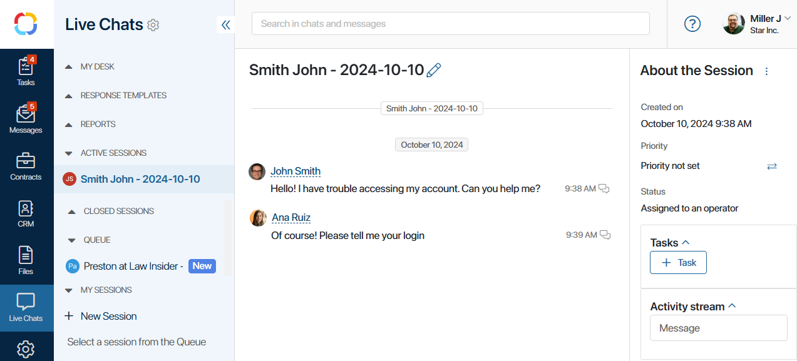

The Live Chats workspace is a versatile chat support center that allows you to communicate with employees, partners, and customers.
With live chats, you can process messages from internal BRIX users as well as communicate with external users by connecting popular instant messengers or setting up an integration with your email inbox.

To allow users contact the company’s support team, create and configure a live chat. Requests in live chats are processed by operators. These are users specified in a live chat’s settings.
For example, you can create a live chat for the HR department. Your employees, who are BRIX users, will be able to write their questions about vacations, compensations, sick leaves, etc. without having to search for the employee responsible for their issue.
For clients and partners, you can set up a customer service live chat for external users and connect it with the corporate email or instant messengers, for example, Telegram and WhatsApp. The clients will be able to communicate with you through the messenger they prefer, while your operators will receive all the messages in the BRIX interface. The chat history for every client will be stored in the system.
You can learn more about working with live chats in the following articles:
- How the Live Chats workspace is organized.
- Groups in the Live Chats workspace.
- Create a live chat.
- General live chat settings.
- Configure a session.
- Configure message routing.
- Configure SLA in live chats.
- Connect messengers to a live chat.
- Connect an email account to a live chat.
- Configure automatic process start.
- Create an online LiveChat for your website.
- Export session parameters.
- Delete a live chat.
- Write to live chats in BRIX.
- Write to live chats from messengers, by email, or in an online LiveChat.
- Process incoming messages.
- Manually start a business process.
- Operator status.
- Lock a session.
- Blocklist.
- Initiate a chat with an external user.
- Response templates.
- Reports.